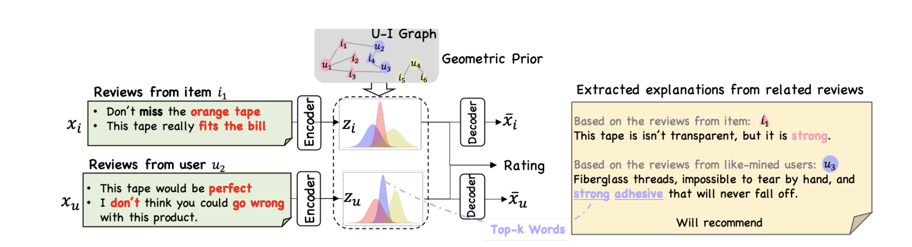
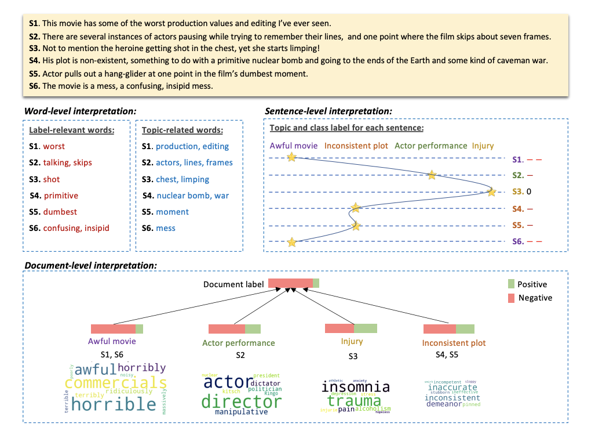
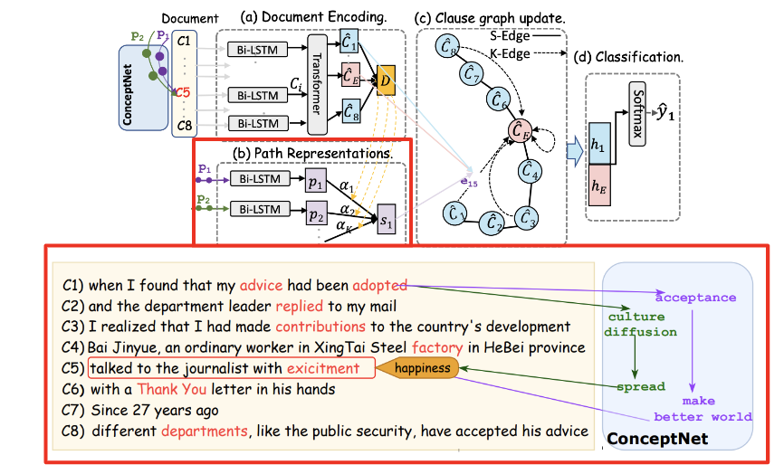
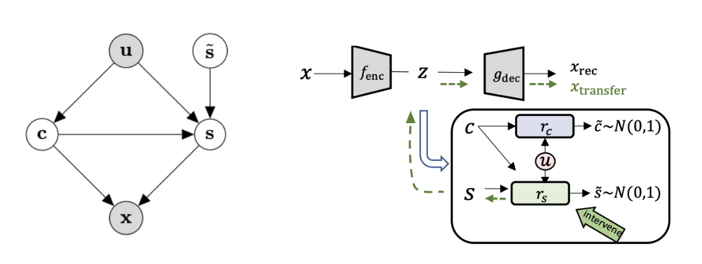

|
Hanqi Yan I'm a PhD Student at University of Warwick and King's college London, where I am doing interpretable and Robust NLP. I finished my M.S. at Peking University (2017-2020) in Academy for Advanced Interdisciplinary Studies and my B.E. at Beihang University (2013-2017) in Information Engineering Department. During Ph.D., I started my Causality Journey in visiting professor Kun Zhang affiliated with Causal Learning and Reasoning Group at CMU (2022.10-2023.02). Before Ph.D., I started my NLP journey in visiting professor Wenjie Li affiliated Natural Language Processing Group @PolyU Hong Kong (2019.07-2019.10). |
{kind=link}
ResearchI study interpretable and robust NLP models: In the LLM era, I focus on constrained planning (search) in the model decoding/fine-tuning phases , to achieve safe, reliable and fair generation. Additionally, I align the models' behaviors with human knowledge in self-explanatory framework in probablistic perspective and propose empirical and principled methods to alleviate spurious correlation and learn robust representations under distribution shifts |
Publication |
|

|
The Mystery and Fascination of LLMs: A Comprehensive Survey on the Interpretation and Analysis of Emergent Abilities.
Y. Zhou, J. Li, Y.Xiang, H.Yan, L. Gui, Y. He Under Review of TACL, 136, 2008 From Macro perspective, Why In-Context Learning can learn Different Algorithms without gradient descent, e.g, Regression, Bayesian. |
|  |
Explainable Recommender with Geometric Information Bottleneck
Hanqi Yan, L. Gui, M. Wang, K. Zhang and Y. He TKDE, 2023 To ease the humman annotation for rationales in Recommender, a prior from user-item interactions is incorporated into the textual latent factors for explaination generation.. |
|  |
Hierarchical Interpretation of Neural Text Classification
Hanqi Yan, L. Gui, M. Wang, K. Zhang and Y. He Computational Linguistics, 2022, Presented at EMNLP22. Unsupervised self-explanatory framework for document classification. It can extract word-, sentence-, and topic-level rationales explaining the document-level decision. |
|  |
A Knowledge-Aware Graph Model for Emotion Cause Extraction
Hanqi Yan, L. Gui, G. Pergola and Y. He Computational Linguistics, 2022, Presented at EMNLP22. Commonsense Knowledge, i.e., ConceptNet is applied as invariant feature to tackle the distribution shift and Position Bias. |
|  |
Counterfactual Generation with Identifiability Guarantee
Hanqi Yan, L. Kong, L. Gui, Y. Chi, Eric. Xing, Y. He, K. Zhang. Neurips, 2023. Provide Identification guarantees for successful disentanglement of the content and style variables, further supports the intervention of latent attributes of the text. This principled representations can shed light on the constrained, i.e., safe and moral generation for large language models with noisy pertaining data. |
Professional Activities |
|
Feel free to steal this website's source code. Do not scrape the HTML from this page itself, as it includes analytics tags that you do not want on your own website — use the github code instead. Also, consider using Leonid Keselman's Jekyll fork of this page. |